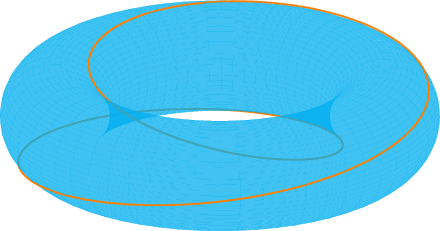
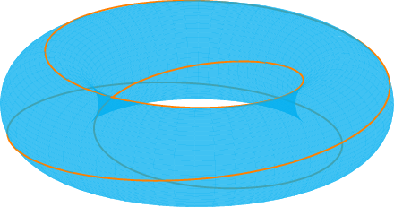
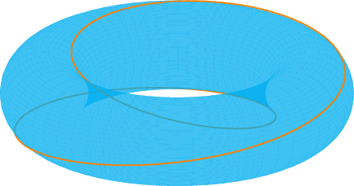
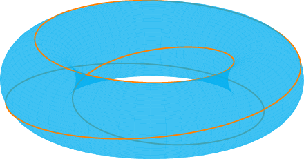

Free softwares I use
One of the aims of science is to make science transparent rather than secret, making learning science easy rather than hard. Open-source movements are providing us a free and clean world where we can explore and learn new things and enjoy our learning and working when using computers. Open-source resources equipped with a powerful search engine (e.g. Google) are transforming the way we learn programming. Using free software instead of proprietary one is a trend in computational physics community. By using open-source softwares, we can do whatever we want to do with our computers. It is not only possible but also efficient and fun to use only free softwares in doing research.
I have been a GNU/Linux user since 2007. This page lists the free softwares I use frequently. These softwares are all open source softwares, most of which are very popular in open-source communities.
"Free software has become the foundation of a learning society where we share our knowledge in a way that others can build upon and enjoy."
GNU is a Unix-like operating system. For me, GNU/Linux operating system provides a stable, flexible, and highly customizable working platform. The specific GNU/Linux distributions I use are Debian and Ubuntu
After using Gnuplot for many years, I decided to switch gradually to using these Python packages (SciPy, NumPy, and matplotlib) to do visualization because it is fun to use Python.
Before 2017, I used Maxima (a famous computer algebra system in free software communities). I am now using SymPy, which is a computer algebra system written in Python and using python as the interface language. I now prefer Python-based tools because it is straightforward and fun to use Python.
There are a huge number of python modules (often with "Py" in their names), which are angels of open-source community. They are demonstrating the strength of the open-source model and how the world is being changed by those who develop and use open-source softwares.
PGF/TikZ
PGF/TikZ are languages for producing vector graphics. The following figures visualize magnetic field lines on tokamak magnetic surfaces with different values of safety factor q. The quality of the graphics created by PGF/TikZ is amazing.
Gnuplot is command-line driven graphing utility. Most of the figures in my publications are created by gnuplot. The gnuplot terminals I frequently use include x11, postscript, epslatex, png, and gif.
Gnuplot can generate animation by using the "gif" terminal. The following are some examples, which describe, respectively, (1) a traveling wave, (2) a standing wave that forms due to two traveling waves with the same frequency and aptitude but opposite directions of propagation, (3) two interacting wave packets, (4)a wave packet with the group velocity larger than phase velocity, and (5) a wave-packet with the group velocity less than the phase velocity
The following is a 2D animation describing m=4 ballooning modes in tokamak (right figure is for a mode with radial phase variation):
The following is an animation of a guiding center orbit in EAST tokamak:
The three-body problem is the simplest system that can not be analytically solved, where numerical simulations are generally required. The following is a simple simulation of 10 positive-charged particles interacting with each other. This is a toy project. I took one hour for me to write the simulation code (in Fortran) and make the animation (using gnuplot). Partilce-based numerical methods are often attractive to us because these methods seem easy to understand, simple to write codes for, and it is fun to animate the results.
I rely heavily on Texmacs to write notes containing mathematical formulas. In recent years, I seldom use paper and pencil for deriving mathematical formulas, all these are done in Texmacs. Texmacs is a free wysiwyw (what you see is what you want) format editor with special features for scientists. If you are still writing obscure TEX codes to prepare papers for publication, and want to know what is the right way to prepare papers without MS word, I recommend you to try Texmacs.
I also use Texmacs as an interface to Maxima (a famous computer algebra system in free software communities). Here is a screen-shot of my using Maxima in Texmacs:
Emacs can be called "the king of text editors". I use it to write various codes, misc notes, and, of course, this web page.
Vector graphics editor: inkscape, Xfig
In science, we prefer vector graphics over raster graphics (also called bitmap). The reason is that the former uses paths, points, lines, curves and shapes or polygons (which are all based upon mathematical equations) to represent images, which makes the images generated can be scaled without degrading the clarity of the images (raster graphics represent images as an array of pixlels and thus scale with loss of clarity).
Xfig is a vector graphics editor I have once used. Xfig is easy to use and is enough for drawing simple technical vector graphics. The following is a vector graphic created by Xfig, describing the neutral beam injection geometry on EAST tokamak.
There is no further development of Xfig in recent years. I plan to switch to using " inkscape,", which is said to be a much more advanced vector graphic editors. I have learned the basics about inkscape but have never drawn a delicate vector graphic using it. Besides Xfig,I also use frequently a vector graphic tool included in TeXmacs.
Metapost is a vector graphic programming language that can be used to produce high-quality graphics. I use it to draw sketch map used in my papers and presentation to make things clear. A figure used in my Ph.D. thesis is as follows:
asymptote is a vector graphic language, which is inspired by MetaPost, with a much cleaner programming syntax and IEEE floating-point numerics
Bash is the default command-line interpreter for most Linux distributions. While the most frequent use of bash is to provide a command line to execute commands, the most powerful ability of bash is its use as a script language, which makes most of my routine works in Linux automatic and error-free.
Expect scripting language is able to talk with your interactive programs that require user interaction, eliminating the need of your interactive response.
Expect scripting language works by waiting a prompting message output by a program (this message indicates that there is a following user interaction required), if the actual message output by the program match the message defined in the expect command, then the Expect script will send the corresponding response defined in the expect script, which will act as the original user interaction.
You can say that this tool is your robot which will automate your scripts by avoiding your interaction (e.g., typing a password).
spawn Starting a script or a program.
expect Waiting for program output.
send Sending a reply to your program.
The spawn command is used to start a script or a program like the shell, FTP, Telnet, SSH, SCP, and so on.
The Expect command defines and waits for a particular message. If the message output by the program match the message defined in the expect command, the send command will send a reply to a script or a program, which acts as a substitute for the user interaction.
The following is an expect script, in which I use oathtool to generate the time-based one-time-password and store the result in a variable otp and send this password to scp, so that I can scp a file from my local machine to the nersc supercomputer without manually generating and typing the one-time-password.
#!/usr/bin/expect -f
set otp [exec oathtool --totp -b my_secrete_key]
set timeout -1
spawn scp a.f90 usrname@cori.nersc.gov:~/
expect "Password + OTP:"
send -- "my_passwd${otp}\r"
expect eof
I use "GNU make" to control the compiling process of Fortran codes written by me.
I use rsync to synchronize the content of several directories between my laptop, desktop computer, and the cluster.
cron is a system daemon used to execute tasks at designated times. Cron is a time-based job scheduler, which we can use to schedule jobs (commands or shell scripts) to run periodically at fixed times, dates, or intervals. I use cron to schedule jobs such as converting some files on my desktop computer to PDF/html formats and then uploading these files to my website at midnight.
I use latex2html to transform latex files (which themselves are exported from texmacs format) to html format. The html version of my research notes are obtained this way.
Sed is a stream editor, which is usually invoked in shell scripts to transform text files. I often use sed to alter parameters in input namelist files of fortran programs. Doing this way makes the process of parameter scan automatic, thus making the process error-free. Sed was inspired by the popular grep command (I use grep many times daily). AWK language evovled as a successor of sed. Both sed and AWK inspired and influenced the Perl language. Tools for text processing/extraction are important for computer automation and are helpful for managing large program with many source files.
Which tools one chooses to use depends on many factors (see this stackoverflow question).
FVWM is a window manager for X window system, which is simple and at the same time highly configurable.
I prefer X window system plus FVWM as my desktop environment rather than the heavy desktop environment such as Gnome and KDE, though they are excellent and work well for most people. This is the screen shot of my desktop. My FVWM configure file can be found here.
Evince is a viewer for multiple document formats, including PDF, djvu, and Postscript.
I use gv to view eps figure created by gnuplot.
Mplayer is an excellent video and audio player. Mplayer can play video even when you do not start the X window system. I use the following command to play randomly the music files in my ~/music directory:
cd ~/music/ && mplayer `ls |sort --random-sort`
We can also use the -shuffle option along with the find command to play randomly all the mp3 files on the system:
find -iname '*.mp3' >mylist && mplayer -shuffle -playlist mylist
Firefox
Mozilla Firefox is a free and open source web browser, which is one of the most popular open source softwares
Wikipedia in English is a good and free source of knowledge. It is convenient to edit the content of wikipedia. I have been a contributor of wikipedia since 2007. Although I usually make minor revision to wikipedia, I am happy to know that I contribute to the improvement of the content of wikipedia.
rxvt-unicode
An X11 terminal supporting Chinese.
GNU Wget is a utility for downloading files from the Web. A useful function of Wget is the so-called "recursive downloading", which follows links in webpages, to create local versions of remote web sites, fully mirroring the directory structure of the original site. For example, I use the following command line to download all the lecture notes on Electromagnetism at Prof. Fitzpatrick's website:
wget -r -l 2 -p http://farside.ph.utexas.edu/teaching/jk1/Electromagnetism/index.html
a program for logging into and/or executing commands on a remote machine. Openssh encrypts all traffic to effectively eliminate connection hijacking and other attacks. In China, this encrypting feature, along with the port forwarding capability, provides one way to visit some websites outside China.
Claws Mail
A simple email client. Though I have used it for several years, I do not like it.
Stardict
A dictionary software I use. However, I do not think it is an excellent dictionary software.
Chinese input method: fcitx
I switch to using fctix after using the scim input method for 8 years (since 2007).
Gfortran (GNU Fortran compiler) is my primary Fortran compiler.
LAPACK (Linear Algebra Package) is a robust library for numerical linear algebra. All linear algebra related works in numerical codes written by me are done by calling the corresponding Lapack subroutines.
rox-filer
a file manager, seldom used
gthumb
Gthumb is an image viewer and organizer
gimp
The GNU Image Manipulation Program for X Window systems.
ImageMagick provides a suit of command-line utilities, such as convert and import, which can be used to create, edit, compose, or convert bitmap images.
Various command-line utilities
Various command-line utilities that can be used to finish various tasks: grep, diff, sort, wc, paste, ps, jobs, kill, top, du, find, ls, cd, cp, scp, mv, mkdir, cat, rm, tar, chmod, apptitude, sudo, patch, man, pdftk, epsmerge,epstool, lftp, ...
The following one-line awk script
history | awk '{CMD[$2]++;count++;}END { for (a in CMD)print CMD[a] " " CMD[a]/count*100 "% " a;}' | grep -v "./" | column -c3 -s " " -t | sort -nr | nl | head -n10
gives the top 10 commands invoked from my terminal:
1 3244 16.22% ls
2 3222 16.11% cd
3 2357 11.785% gnuplot
4 1982 9.91% make
5 1322 6.61% gv
6 978 4.89% mv
7 786 3.93% cp
8 673 3.365% texmacs
9 630 3.15% evince
10 502 2.51% rm
Back to Youjun Hu's Homepage
 


 


{kind=link}